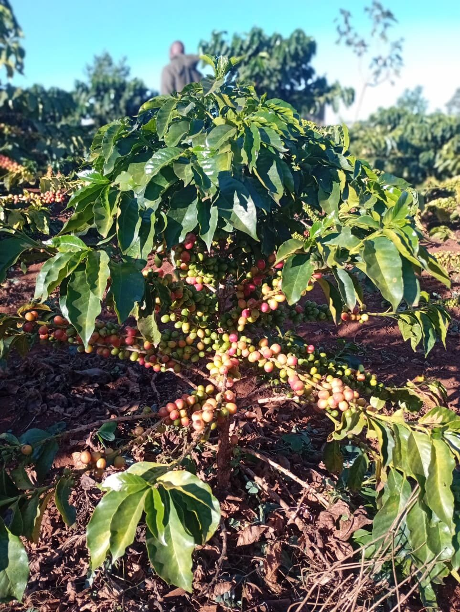

Following the Journey of a Coffee Bean
A coffee harvest does not simply leave the farm and arrive at a buyer.
Between the moment a coffee cherry is picked and the moment it becomes graded green coffee, it passes through a chain of people, processes, measurements and decisions.
For Jonathan Chomba, an experienced Arabica coffee farmer, that journey begins in the field.
During GreenTrack's field research, Jonathan walked us through how he grows, records, processes and sells his coffee — giving us a closer look at a crop whose journey is very different from many of the other crops we encounter.
The Work Begins Long Before Harvest
Jonathan farms Arabica coffee and has around three to four years of farming experience. His notes reference three varieties he works with — SL28, SL34, and K7 — each associated in his records with its own taste profile, broadly grouped as acidic or sweet.
Getting a coffee tree to the point of harvest takes time: nursery establishment, field preparation, planting, and ongoing crop management all come before a single cherry is picked. Jonathan's crop-health management includes watching for two diseases common to Arabica coffee in Kenya — Coffee Berry Disease (CBD) and Coffee Leaf Rust (CLR) — and his notes describe a preventive fungicide application on a roughly monthly schedule.

Jonathan Chomba during GreenTrack's field research.A Notebook Still Carries the Record
Jonathan currently records his crop and harvest information in a physical notebook — a ledger kept by hand. After each harvest, he weighs what's been picked, and he tracks early and late crops separately rather than lumping a season together as one number.
By his own account, the record-keeping itself hasn't been the main problem. The real risk is simpler and more human: forgetting to write something down before it's lost.
The goal is not to replace the knowledge farmers already have. It is to make that knowledge easier to record, preserve, and connect to what happens later in the supply chain.
Coffee Has a Long Journey After the Farm
After harvesting, Jonathan's coffee cherries go to a wet mill, sometimes called a factory. There, the cherries are pulped, fermented, and dried — the raw fruit gradually giving way to what's known as parchment coffee, dried on tables and graded at that stage.
Once dried, the parchment is packaged and transported to a dry mill. There, the batch is received against the farmer's ID, weighed, and checked for moisture content. Samples are pulled, the parchment is milled down into green coffee, and the coffee is graded and written up in a report before being labelled and packaged for the next stage.
From the dry mill, coffee moves to a marketer, then a warehouse, then an auction — where buyers and coffee cuppers evaluate it before it's finally sold.
Farm
Jonathan's coffee begins with the farmer.
Harvest
Coffee cherries are picked and weighed.
Wet Mill
Pulping, fermentation, and drying.
Dry Mill
Weighing, moisture checks, and testing.
Grading
AA · AB · C · E · PB · TT
Marketing
Packaged, stored, prepared for auction.
Auction
Buyers and cuppers evaluate samples.
What Does a Buyer Need to Know?
Asked what matters most to a buyer evaluating a batch, Jonathan pointed to three things:
Grade
Farmer PIN / ID
Correct Moisture Content
These details help describe what is actually being sold, and they carry meaning as the coffee moves further through the supply chain — from mill records to a marketer's listing to a buyer's decision at auction. They're not the only information a buyer might ever want, but they're the details Jonathan identified as important.
He also described the practical pressures around a sale: the dollar value of coffee affects the price he receives, and deductions can be taken out both during wet milling and dry milling. Transportation logistics add another layer of indirect risk — a batch has to physically move through each of these stages before it becomes a paycheck. Jonathan has sold as an estate farmer, as a cooperative farmer, and through the Nairobi Coffee Exchange auction — different channels, with the same underlying chain behind them.
Where GreenTrack Fits
We showed Jonathan the GreenTrack concept, and he identified several capabilities he'd find useful — starting with the ability to communicate directly with buyers through an app rather than relying only on the channels he uses today.
Record Crops
View Buyers
Manage Produce Availability
Receive Orders
Crop Health Information
Nutrition Information
What Would Make the System Trustworthy?
Fresh Information
A Familiar, User-Friendly Interface
Reliable Handling of the Harvest Through the Chain
None of these are abstract preferences. They come directly from someone who has watched a harvest move through mills, marketers, and an auction floor before it becomes income — and who knows exactly how much can go unrecorded, or unpaid for, along the way.
One Farmer, One Harvest, One Story
Jonathan's coffee journey helped us see why GreenTrack is being built around records rather than simply another digital marketplace.
A crop has a history.
For coffee, that history can begin with a seedling, continue through years of crop management, move through harvesting and milling, and eventually reach a buyer through a complex supply chain. GreenTrack is exploring how that journey can remain connected.
Because behind every batch is a farmer.
And behind every farmer is a story worth keeping.